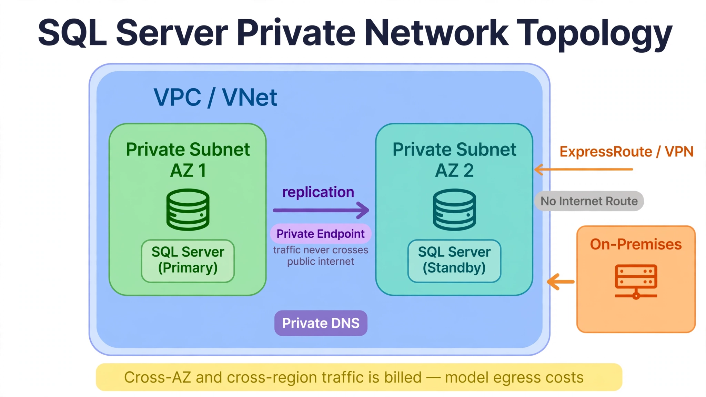

Chapter 5: SQL Server Cloud Architecture Patterns
Cloud SQL Server deployments repeat a small set of architectural patterns: how availability is achieved, how reads scale, how storage grows, how the network is laid out, how tuning happens when the OS is not yours, how serverless and auto-scaling work, how multi-region DR is designed, how observability is assembled, how cost is engineered, and what each provider constrains. This chapter catalogs the patterns with SQL Server as the engine throughout.
5.1 High Availability and Failover Architecture
RDS for SQL Server Multi-AZ deploys a synchronous standby in a second Availability Zone using database mirroring internals; the endpoint fails over via DNS, typically in 60–120 seconds. The standby is not readable. Azure SQL offers multiple HA tiers: General Purpose uses remote storage with a hot standby (failover ~20–30 seconds); Business Critical runs an Always On availability group across nodes (failover typically faster, with a readable secondary included); Hyperscale disaggregates compute from page servers, making failover fast regardless of database size. Cloud SQL for SQL Server uses regional Persistent Disk with synchronous replication to a standby zone — failover is automatic, typically 60–120 seconds.
Self-managed HA: SQL Server on EC2, Azure VMs, or GCE supports full Always On availability groups — synchronous replicas across zones, readable secondaries, and (with a witness and stretched configuration) multi-region AGs. This is the HA pattern that gives you readable secondaries on AWS/GCP, where the managed services don't offer them (Chapter 8).
# Terraform: RDS for SQL Server with Multi-AZ and backup retention
resource "aws_db_instance" "prod" {
identifier = "prod-sqlserver"
engine = "sqlserver-se"
engine_version = "16.00.4125.1.v1"
instance_class = "db.r7i.2xlarge"
allocated_storage = 1000
storage_type = "gp3"
multi_az = true
storage_encrypted = true
backup_retention_period = 14
deletion_protection = true
}5.2 Read Scaling and Replica Patterns
RDS for SQL Server has no read replicas — the managed service on AWS is single-writer with a non-readable standby. Read scaling on AWS means either SQL Server on EC2 with Always On readable secondaries, or offloading reads to a different tier (Chapter 22's columnstore analytics pattern). Azure SQL Hyperscale supports named replicas (up to 30) that share the underlying page-server storage — Microsoft's answer to read scale-out, with replica lag measured in milliseconds because replicas read from shared pages. Azure SQL Database geo-replicas are readable secondaries in other regions for both DR and read offload (Chapter 16). Cloud SQL read replicas serve reads but promote-to-standalone for DR rather than preserving a global endpoint (Chapter 19).
Connection pooling pattern: a standalone pooler in front of a replica pool doesn't translate to managed services directly — RDS Proxy (Chapter 10) is the managed alternative for SQL Server connection fan-in on AWS, while Azure and GCP expect application-level pooling with driver-level failover awareness. When replicas have lag (self-managed AG secondaries under heavy write load, cross-region replicas), route lag-tolerant reads to secondaries and lag-sensitive reads to the primary — never assume replica reads are current.
5.3 Storage Architecture and Auto-Scaling
RDS storage is EBS-backed: gp3 (baseline performance, provisionable IOPS), io1/io2 (high IOPS). Storage increases are permanent — you cannot shrink. Scaling a Multi-AZ instance's storage triggers a failover-like event; plan the operational window. Azure SQL Hyperscale storage grows to 100 TB independently of compute, and restores complete in minutes regardless of database size because only metadata is rehydrated. Cloud SQL storage auto-scales to 64 TB. The operational rules: set MaxAllocatedStorage on RDS to bound auto-scaling cost, alert on growth rate not just free space, and remember that storage tier selection (gp3 vs io2 — Chapter 36) is a performance decision disguised as a cost decision.
-- T-SQL: compare logical database sizes against provisioned storage
SELECT DB_NAME(database_id) AS db_name,
SUM(size) * 8.0 / 1024 / 1024 AS total_gb,
SUM(FILEPROPERTY(name, 'SpaceUsed')) * 8.0 / 1024 / 1024 AS used_gb
FROM sys.master_files
GROUP BY database_id
ORDER BY total_gb DESC;5.4 Network Architecture: VPC, Private Link, and Connectivity
Every managed instance lives inside the cloud's network: RDS in a VPC via DB subnet groups spanning at least two AZs, with security groups as stateful firewalls. Azure SQL reachable via public endpoint with firewall rules, or privately via Azure Private Link with private DNS. Cloud SQL via authorized networks or private IP through Private Service Connect. The architecture patterns: put databases in private subnets with no internet route; use private endpoints/links so traffic never crosses the public internet; peer or hub-and-spoke VNets/VPCs for cross-region and on-premises connectivity (ExpressRoute, Direct Connect, Cloud Interconnect); and model egress costs — cross-AZ and cross-region traffic is billed (Chapter 40).

How to read it: the blue VPC/VNet zone is the network boundary — everything inside it stays off the public internet. Each green/teal private subnet spans a different availability zone and holds a SQL Server instance, with the purple replication arrow keeping the standby current. The purple Private Endpoint pill is the connection path applications use: traffic enters the VPC but never crosses the public internet, and Private DNS resolves the database name to that private address. The orange On-Premises zone connects back via ExpressRoute or VPN, and the gray "No Internet Route" badge is the security guarantee — the databases have no path to or from the internet at all. The yellow banner is the cost rule: replication and cross-zone traffic is billed, so place secondaries where the economics favor them (Chapter 37) and model egress before you scale out.
5.5 Parameter Tuning in Managed Environments
Managed services expose a curated subset of engine settings: RDS via DB parameter groups (the SQLSERVER_2019/SQLSERVER_2022 families — Chapter 6); Azure SQL via database-scoped configuration and portal settings; Cloud SQL for SQL Server via a narrow documented flag set (most tuning happens through sp_configure inside the instance). The tuning pattern: apply changes through IaC (parameter group in Terraform, database-scoped config in scripts) so configuration is versioned; test non-dynamic settings in staging first; and accept that settings the provider doesn't expose (startup parameters, trace flags on some services) are off-limits — design around them (Chapter 35).
5.6 Serverless and Auto-Scaling Patterns
Azure SQL Database serverless auto-scales vCores between a floor and ceiling and auto-pauses after inactivity — the pattern for intermittent workloads (Chapter 11). Compute auto-scaling for SQL Server is otherwise limited: managed services don't vertically scale on load automatically, so the pattern is scheduled scaling (scale up before the business day, down at night) and read-scale routing (direct reporting to Hyperscale replicas or AG secondaries). For containers and Lambda-like workloads generating connection storms, RDS Proxy (Chapter 10) absorbs the fan-in. The serverless decision rule: variable, intermittent workloads with pausable demand belong on serverless; steady production belongs on provisioned with commitments (Chapter 38).
5.7 Multi-Region and Disaster Recovery Architecture
Cross-region DR patterns by platform: RDS for SQL Server uses cross-region native backups to S3 plus restore automation, or log shipping to a second region's instance (Chapter 16) — there is no managed cross-region replica for SQL Server on RDS. Azure SQL offers auto-failover groups: a readable geo-secondary, DNS-level failover, and typically sub-minute RTO for planned failover (Chapter 16). Cloud SQL cross-region read replicas exist but promote to standalone instances — your automation must handle the endpoint switch (Chapter 19).
The DR table: for RPO near zero and RTO under minutes, Azure failover groups are the strongest native option; for AWS, cross-region log shipping with tested restore automation is the production pattern (Chapter 16). Whatever the mechanism, DR is only real if tested quarterly — an untested DR plan is a hope (Chapter 29).
5.8 Observability Architecture: Metrics, Logs, and Tracing
Assemble the three pillars per platform: metrics (CloudWatch, Azure Monitor, Cloud Monitoring — host and database metrics with dashboards per Chapter 30), logs (SQL Server error logs exported to CloudWatch Logs / Log Analytics / Cloud Logging, with alerts on severity), and query tracing (Query Store on Azure, Performance Insights on RDS, Query Insights on Cloud SQL — the query-level layer that identifies what is slow). The architecture pattern: platform metrics answer "is the database healthy," query telemetry answers "which query is the problem," and the alerting hierarchy (page/ticket/log — Chapter 30) routes each signal to the right urgency.
5.9 Cost Architecture: Designing for Efficiency
Design cost in, don't bolt it on: choose the storage tier for the I/O profile (gp3 vs io2 — Chapter 36), commit the stable baseline to reservations (Chapter 38), right-size from measured peak not provisioned headroom (Chapter 39), place secondaries where the economics favor them (Chapter 37), and consolidate where density pays (elastic pools — Chapter 14). The io2-vs-gp3 decision alone can swing storage cost substantially for I/O-heavy workloads — pull actual IOPS from monitoring and price both models (Chapter 36). Cost architecture is capacity architecture done honestly.
5.10 Feature and Component Constraints by Cloud Provider
The constraints that shape architecture: RDS for SQL Server — no readable secondaries, no IAM database authentication, no SQL Server Agent on some editions (check current docs), limited sysadmin. Azure SQL Database — no Agent, no cross-database queries without elastic queries, DTU vs vCore model choice. Cloud SQL for SQL Server — narrower flag surface, regional HA model. Self-managed VMs — full engine, but you own patching, backups, and AG operations. Every architecture decision in this book is a negotiation with one of these constraint sets (Chapters 6–19 detail each platform).
Key Takeaways
Test yourself on this chapter
5 questions · instant scoring · explanations included
QueryOptimizer — Self-Hosted SQL Performance Workbench
Execution-plan visualizer · Index advisor · Slow query dashboard · Built for SQL Server